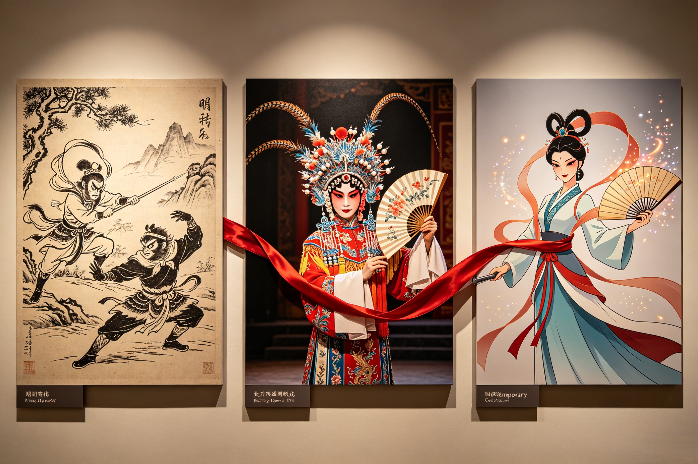

500 Years of the Iron Queen
From Ming dynasty woodblock prints to the golden age of Chinese animation, from Peking Opera to modern feminist readings — Princess Iron Fan has endured for five centuries. The story of how a demon queen became an icon of the woman who refuses to be broken.
Princess Iron Fan first entered the literary record in Wu Cheng'en's Journey to the West (published 1592), where the three borrowings of the Banana Leaf Fan occupy chapters 59 through 61 — one of the longest continuous episodes in the entire 100-chapter novel. This length is itself significant: the author clearly found the Princess Iron Fan story more compelling than a simple obstacle-of-the-week. She is one of the few demon characters in the epic given genuine psychological depth. Her anger is justified — Sun Wukong once tried to kill her son. Her grief is real — she has lost both her child and her husband to forces beyond her control. Her deceptions are acts of self-defense rather than malice — the fake fan she gives to Wukong is not an act of evil but an act of desperation, a woman trying to keep the last thing she owns from a man who has already taken everything else. Ming dynasty literati, for whom the novel was a work of popular entertainment rather than serious literature, nonetheless recognized the episode's emotional power. Marginal annotations in surviving Ming editions note the pathos of Princess Iron Fan's situation, with one anonymous commentator writing: "The demoness is not wrong. The monkey is not right. The reader must choose."
Through the Qing dynasty (1644–1912), the Banana Leaf Fan episode was frequently excerpted as a standalone story in popular chapbooks (唱本, changben), cheap woodblock-printed booklets sold at temple fairs and urban markets. These chapbooks, illustrated with crude but energetic woodcuts, focused increasingly on Princess Iron Fan as the protagonist rather than an obstacle. The illustrations from this period are among our most valuable visual records of how common readers imagined her: a fierce woman in flowing robes, her hair streaming in a supernatural wind, the massive fan raised like a weapon, her expression one of righteous fury rather than demonic malice. By the 19th century, she had become a stock character in Chinese folklore — the "iron woman" archetype who could be fierce, maternal, wounded, and powerful simultaneously. Late Qing literary critics were among the first to note the feminist dimensions of her character. The scholar Yu Yue (1821–1907), in his writings on popular fiction, observed that Princess Iron Fan "refuses to submit to the monkey's authority, defends her property against his claim of right, and survives the destruction of her family with her dignity intact. There is no other female character in the novel who accomplishes this." This observation — that her "villainy" consists entirely of saying no to a powerful man who believes he is entitled to what she owns — would be taken up by feminist critics centuries later, but its seeds were already present in the scholarship of the late imperial period.
"The demoness is not wrong. The monkey is not right. The reader must choose."
— Ming dynasty marginal annotation, Journey to the West (1592 edition)The literary afterlife of Princess Iron Fan extends beyond the Ming novel itself. She appears in Qing dynasty sequels and spin-offs of Journey to the West, most notably in the 17th-century sequel A Supplement to Journey to the West, where her story is expanded and given a more conclusive ending. In the 20th century, translators of Journey to the West into Western languages consistently singled out her episode for particular attention: the Arthur Waley translation Monkey (1942), which introduced the novel to the English-speaking world, devotes significant space to the Banana Leaf Fan episode, and subsequent translations by Anthony C. Yu and David Kherdian have maintained this emphasis. The literary Princess Iron Fan is, in the end, a paradox: a character who appears in only three chapters of a 100-chapter novel but has generated a cultural footprint that rivals protagonists of entire epics. Her story is the one that readers remember, the one that gets adapted, the one that resonates across centuries. The Bull Demon King, despite being one of the seven great demon sages, is usually remembered as a brute and an adulterer. Sun Wukong dominates the novel's legacy in every other dimension — but in the Banana Leaf Fan episode, it is Princess Iron Fan who is the unforgettable figure, the antagonist who forces even the great Monkey King to confront the limits of his power and the justice of his cause.
Princess Iron Fan's journey from page to stage and screen is one of the most remarkable trajectories in Chinese performance history. In Peking Opera (京剧), "The Three Borrowings of the Banana Leaf Fan" is a classic repertoire piece that has been performed continuously since the 19th century. The role of Princess Iron Fan is classified as a daomadan (刀马旦) — the "female warrior" role type, one of the most demanding in the art form. The daomadan must combine martial arts, acrobatics, dramatic singing, and subtle emotional expression, all while wearing an elaborate costume that weighs up to fifteen kilograms. The Princess Iron Fan costume is a masterpiece of theatrical design: a phoenix headdress with kingfisher-feather ornaments that shimmer with iridescent blue-green light, flowing robes in deep green and iron-red that echo the colors of the Banana Leaf Fan itself, and a massive prop fan — up to two meters wide when fully extended — that the performer must wield with precision and grace. The fan choreography is the centerpiece of the performance: the actress must make the fan seem both impossibly heavy (to convey its magical weight) and impossibly light (to convey its elemental nature), switching between the two qualities in the space of a single gesture.
The most significant milestone in Princess Iron Fan's screen legacy is the 1941 animated feature film — also titled Princess Iron Fan (铁扇公主). This was China's first feature-length animated film, produced by the Wan brothers (Wan Laiming, Wan Guchan, Wan Chaochen, and Wan Dihuan) at the Mingxing Film Studio in Shanghai. The film is a landmark not only of Chinese cinema but of world animation history: it is the third feature-length animated film ever made, after Disney's Snow White and the Seven Dwarfs (1937) and Pinocchio (1940). Made during the Japanese occupation of Shanghai, the film was a deliberate act of cultural resistance — the Wan brothers chose a Chinese folk tale to assert the vitality of Chinese culture under foreign domination. The film's Princess Iron Fan is the main antagonist, but her portrayal is surprisingly sympathetic: she is regal, proud, and motivated by genuine grievance rather than simple evil. The film was a massive success across Asia, breaking box office records in Shanghai, Hong Kong, and Southeast Asia. More importantly, it is said to have inspired a young Osamu Tezuka in Japan — the future "God of Manga" and creator of Astro Boy — who credited the Wan brothers' film with opening his eyes to the possibilities of animation as an artistic medium.
The 1986 CCTV television series Journey to the West brought Princess Iron Fan to the largest audience she had ever had. Portrayed by actress Wang Fengxia, this version of the character is the definitive live-action Princess Iron Fan for generations of Chinese viewers. Wang's performance captured the character's regal bitterness — a queen who has been wronged but is too proud to play the victim. Her delivery of the line "You tried to kill my son" — spoken to Sun Wukong with a mixture of fury, grief, and cold contempt — remains one of the most quoted moments in the series, frequently circulated as a short video clip on Chinese social media platforms. The 1986 series, despite its limited special effects, succeeded in conveying the emotional complexity of the Banana Leaf Fan episode because it took Princess Iron Fan's perspective seriously. It did not treat her as a monster to be defeated but as a woman with legitimate grievances who happened to be standing in the way of the heroes' journey. This interpretation — that Princess Iron Fan might be the most justified antagonist in the entire novel — has influenced every subsequent adaptation. Nezha, whose 2019 animated blockbuster Ne Zha broke Chinese box office records, occupies a similar space in the modern cultural imagination: a figure who was once a demon but has been reimagined as a misunderstood hero. The 1941 Princess Iron Fan film is often cited in discussions of the lineage of Chinese animation that led to 2019's Ne Zha, positioning Princess Iron Fan as a grandmother of Chinese animated heroines. Sun Wukong is present in all these adaptations — the Monkey King is the constant — but the iron queen has a habit of stealing every scene she is in.
In the 21st century, Princess Iron Fan has undergone a remarkable expansion across new media, reaching audiences far beyond the traditional boundaries of Chinese mythology. In manhua and webcomics, she has been extensively reinterpreted as a complex antiheroine. The legendary Taiwanese cartoonist Cai Zhizhong, whose comic adaptations of Chinese classics have sold millions of copies across Asia, devoted an entire volume to Princess Iron Fan, portraying her as the true protagonist of the Banana Leaf Fan episode. On digital platforms like Kuaikan and Bilibili Comics, countless web manhua have reimagined Princess Iron Fan: some give her a redemption arc; others explore the backstory the novel only hints at — her life before the Bull Demon King, her centuries of cultivation, the moment she first wielded the Banana Leaf Fan. A particularly popular subgenre is the "transmigration" (穿越) story, in which a modern woman dies and wakes up in the body of Princess Iron Fan, armed with knowledge of the plot and determined to change her tragic fate. These stories, while often formulaic in their structure, reveal something important about Princess Iron Fan's appeal: readers do not want to fix her, they want to be her — a woman with power, with presence, with a story worth rewriting.
Video games have proven to be the medium where Princess Iron Fan reaches her largest modern audience. In Honor of Kings (王者荣耀), the most-played mobile game in the world, Princess Iron Fan appears as part of the Bull Demon King's character lore, referenced in his abilities and backstory. In mobile RPGs based on Journey to the West, she is frequently a summonable wind-element character — the Banana Leaf Fan's elemental nature making her a natural fit for games with elemental systems. The 2024 blockbuster Black Myth: Wukong, developed by Game Science, features Flaming Mountain as a major location in the later chapters of the game, with Princess Iron Fan's legacy woven into the environmental storytelling. Players exploring the scorched landscape can find remnants of the demon royal family's presence — the ruins of Plantain Cave, echoes of Red Boy's fire, references to the family that once ruled this domain. The game's interpretation of the Banana Leaf Fan episode is ostensibly from Sun Wukong's perspective, but the environmental details and lore fragments consistently suggest a more sympathetic view of the iron queen. Web novels (网络小说) in the xianxia genre regularly reimagine Princess Iron Fan. The tropes are consistent: the "Reborn as Princess Iron Fan" subgenre, where a modern woman transmigrates into her body and uses knowledge of the original story to avoid tragedy; the Banana Leaf Fan as an ancient treasure sought by protagonists for its elemental power; Princess Iron Fan as a mentor figure to younger female cultivators, passing on the wisdom of a woman who has survived betrayal, loss, and the weight of heaven's judgment.
In film, beyond the 1941 classic, Princess Iron Fan appears in the 2014 film The Monkey King (played by Joe Chen) and the 2016 sequel The Monkey King 2, where her family dynamics with the Bull Demon King are explored in greater depth than in any previous live-action adaptation. These films, while commercially successful, have received mixed reviews for their treatment of her character — critics noted that reducing Princess Iron Fan to a lovesick wife undermined the fierce independence that makes her compelling. A 2025 animated feature announced by Light Chaser Animation (the studio behind White Snake and Green Snake) is reportedly in development, centering on Princess Iron Fan as the protagonist. If completed, it would be the first feature-length animated film to give her the hero's treatment since the 1941 original — a full circle spanning nearly a century. The evolution of Princess Iron Fan across media from 1941 to 2026 — from Chinese animation's first heroine to a globally recognized figure in gaming and digital fiction — is a testament to the character's perennial relevance. She adapts to every format because her core story is universal: a woman who refuses to yield, who defends what is hers, and who survives the destruction of her world without compromising her nature. Sun Wukong may be the star of Black Myth: Wukong and the most-adapted Chinese mythological figure, but Princess Iron Fan's presence in the same game, in the same lore, enriches the world with a perspective that the Monkey King's story alone cannot provide. The Bull Demon King appears in Honor of Kings and numerous games alongside her. Erlang Shen, another popular game character, shares with Princess Iron Fan the status of a figure who is both a foe and a figure of deep sympathy — the antagonist the player respects.
Perhaps the most significant development in Princess Iron Fan's modern legacy is her emergence as a cultural symbol — a figure whose meaning extends far beyond the pages of a 16th-century novel. In feminist readings, Princess Iron Fan has been reclaimed by Chinese scholars as a proto-feminist figure whose story subverts the "demoness defeated by hero" trope that dominates Chinese epic literature. Unlike almost every other female antagonist in the Chinese literary tradition, she is not defeated — she survives. She is not punished — she keeps her fan and her domain. Her "villainy" consists entirely of refusing to surrender her property to a man who wronged her family. In an epic where most female characters are either goddesses, seductresses, or victims, Princess Iron Fan is simply a woman who will not yield. The scholar Wang Jing, in her study of female characters in Journey to the West, argues that Princess Iron Fan "represents the only model of feminine power in the novel that does not require submission to a male authority figure — not a goddess serving her father, not a seductress serving her desire, not a victim serving her fate. She is a woman serving her own will." This reading has gained particular traction in the context of contemporary Chinese feminist discourse, where discussions of women's property rights, marital autonomy, and the right to refuse are central concerns.
The abandoned wife archetype is another dimension of Princess Iron Fan's symbolic resonance. Her story speaks directly to the experiences of countless women in contemporary China and beyond. She is the wife who was left for a younger woman but kept her dignity and her assets — a narrative that resonates in a society where divorce rates are rising and the phenomenon of the "left-behind wife" is a subject of widespread discussion. Princess Iron Fan does not chase her husband. She does not beg him to return. She does not plot against her rival. She simply continues to be herself, ruling her domain, managing her affairs, living her life. The message is subtle but powerful: a woman's worth is not determined by her husband's fidelity. Her dignity does not depend on being chosen. She is valuable, powerful, and complete — whether or not a man is present to validate her. In an unexpected cultural turn, Princess Iron Fan has also been adopted as an environmental symbol by Chinese groups working in Xinjiang. The real Flaming Mountain — the geological formation in the Tian Shan range that inspired the fictional one — faces severe desertification. Local environmental activists have repurposed the story of the iron queen who brought rain to a scorched land as a metaphor for ecological restoration. The Banana Leaf Fan, in this reading, represents the power of human will to change the climate, to bring life back to a dead landscape. Posters featuring Princess Iron Fan wielding her fan against a backdrop of receding desert have appeared at environmental events in Urumqi and Turpan.
Perhaps most significantly, Princess Iron Fan has become a soft power icon in China's cultural diplomacy. Her 1941 film is regularly screened at Chinese cultural centers abroad as evidence of China's animation heritage — proof that Chinese animation predated and influenced the Japanese anime industry, not the other way around. The fact that Osamu Tezuka cited Princess Iron Fan as an inspiration is mentioned in nearly every Chinese article about the history of animation. In this context, Princess Iron Fan represents Chinese cultural priority and the global reach of Chinese storytelling. She is deployed as evidence that Chinese culture does not merely consume global pop culture but has contributed foundational works to it. She shares this symbolic role with Nuwa, another female figure in Chinese mythology reclaimed by feminist and nationalist readings alike — the mother-creator and the iron queen as complementary archetypes of feminine power. Guanyin, the bodhisattva of mercy who took Princess Iron Fan's son, represents a different model of feminine power — one defined by compassion, submission to cosmic law, and the renunciation of personal attachment. The tension between these two figures — the mother who gave up her child willingly (Guanyin's own backstory involves sacrificing her arms for her father) and the mother who fought to keep hers — encapsulates a central question of Chinese feminism: is feminine power found in self-sacrifice or in self-assertion? Xiwangmu, the Queen Mother of the West, is another powerful female sovereign who predates and outlasts the men who try to control her — and together, these three figures (Xiwangmu, Guanyin, and Princess Iron Fan) form a trinity of feminine power in Chinese mythology that spans the full range from primordial authority through compassionate mercy to defiant survival. Princess Iron Fan, the youngest and most human of the three, may be the one who speaks most directly to the modern condition. She is not a creator goddess or a bodhisattva. She is a woman with a fan, a mountain, and an iron will — and that, it turns out, is enough to be remembered for five centuries.
Princess Iron Fan (铁扇公主), released in 1941 by the Wan brothers at the Mingxing Film Studio in Shanghai, was China's first feature-length animated film. It is also the third feature-length animated film in world history, after Disney's Snow White and the Seven Dwarfs (1937) and Pinocchio (1940). The film was made during the Japanese occupation of Shanghai and was considered an act of cultural resistance. It was a massive success across Asia and reportedly inspired a young Osamu Tezuka, the future creator of Astro Boy and the "God of Manga," to pursue animation as a career.
In Peking Opera, Princess Iron Fan is classified as a daomadan (刀马旦) — the "female warrior" role type — which combines martial arts, acrobatics, and dramatic singing. The performer wears an elaborate costume including a phoenix headdress with kingfisher-feather ornaments, flowing robes in deep green and iron-red, and carries a massive prop fan up to two meters wide when fully extended. The fan choreography is the centerpiece of the performance, with the actress alternating between conveying the fan's magical weight and its elemental lightness. "The Three Borrowings of the Banana Leaf Fan" remains a classic Peking Opera repertoire piece to this day.
Princess Iron Fan is considered a feminist symbol because she is one of the few female characters in Journey to the West who is not a goddess, seductress, or victim. She refuses to surrender her property to a man who wronged her family. She survives the destruction of her family with her dignity and her domain intact. Her "villainy" consists entirely of saying no to male entitlement — a reading that resonates powerfully with contemporary feminist analysis. Modern Chinese feminist scholars have reclaimed her as a proto-feminist figure whose story subverts the "demoness defeated by hero" trope. She represents a model of feminine power that does not require submission to any male authority.
Dive Deeper